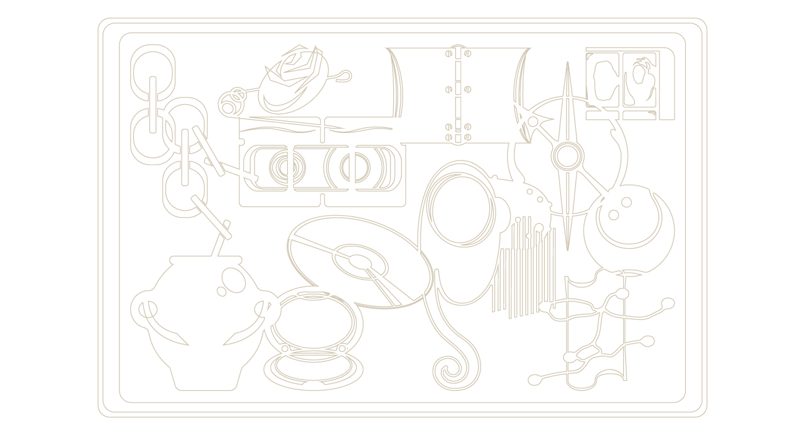
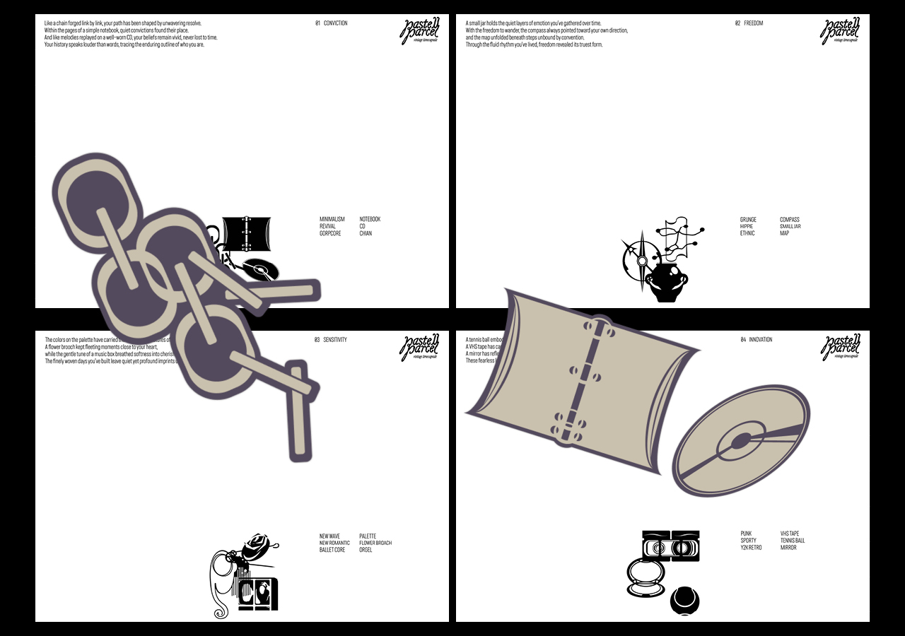
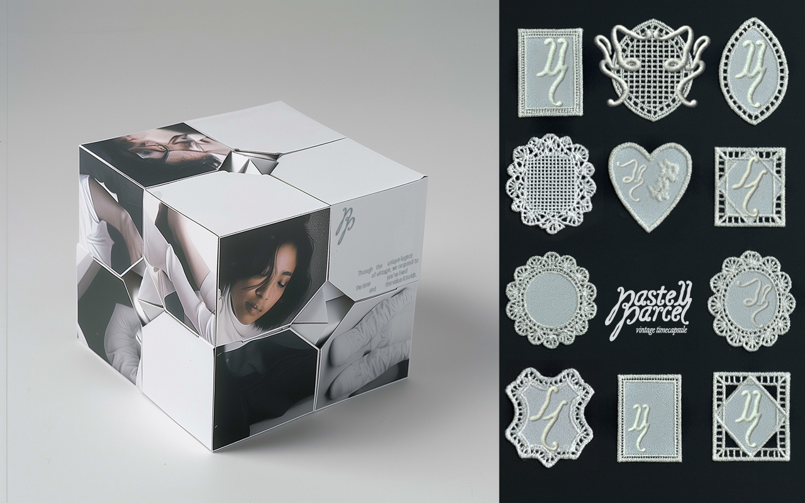
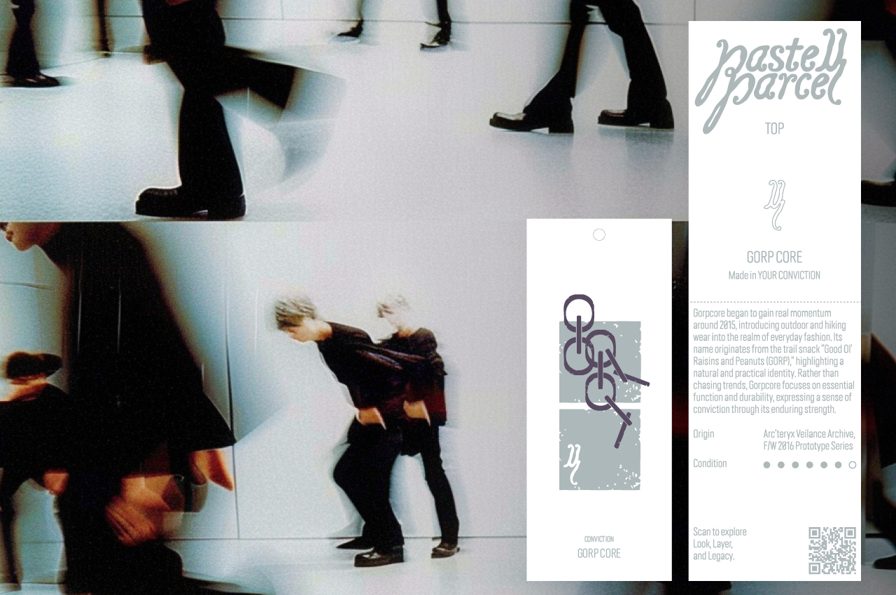
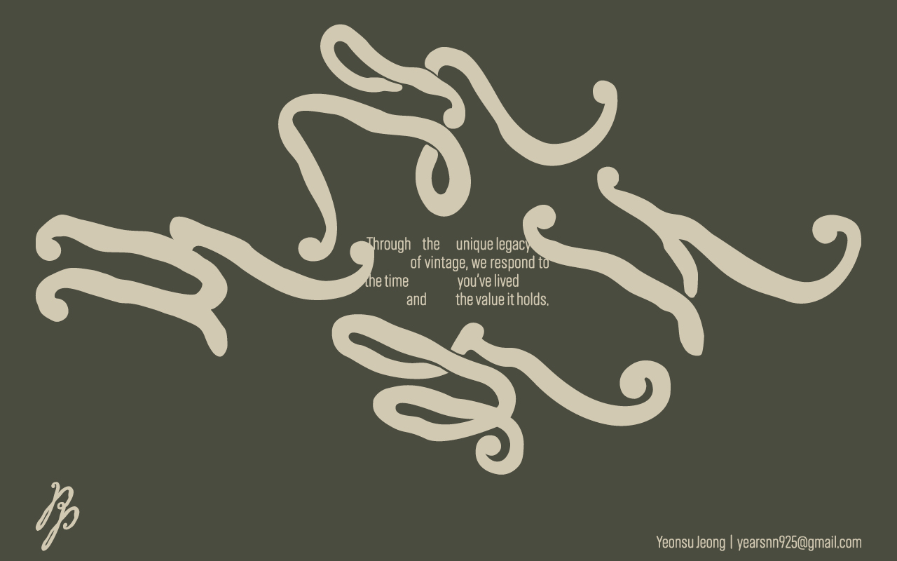
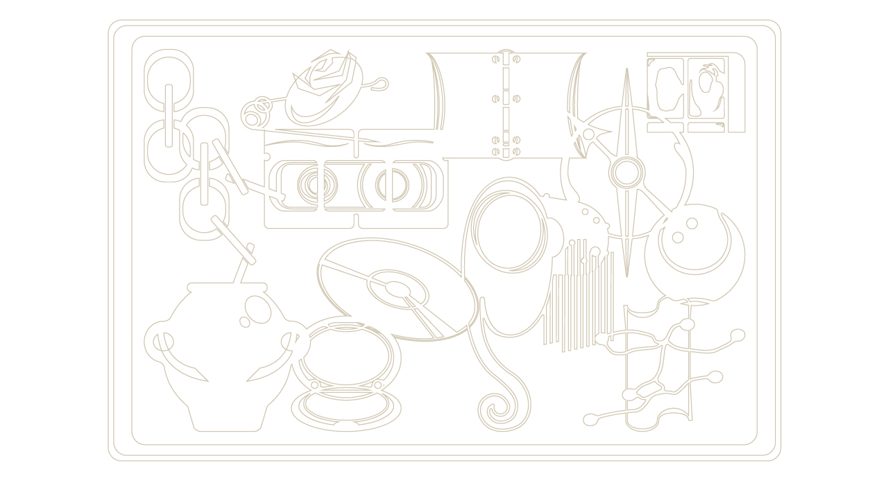
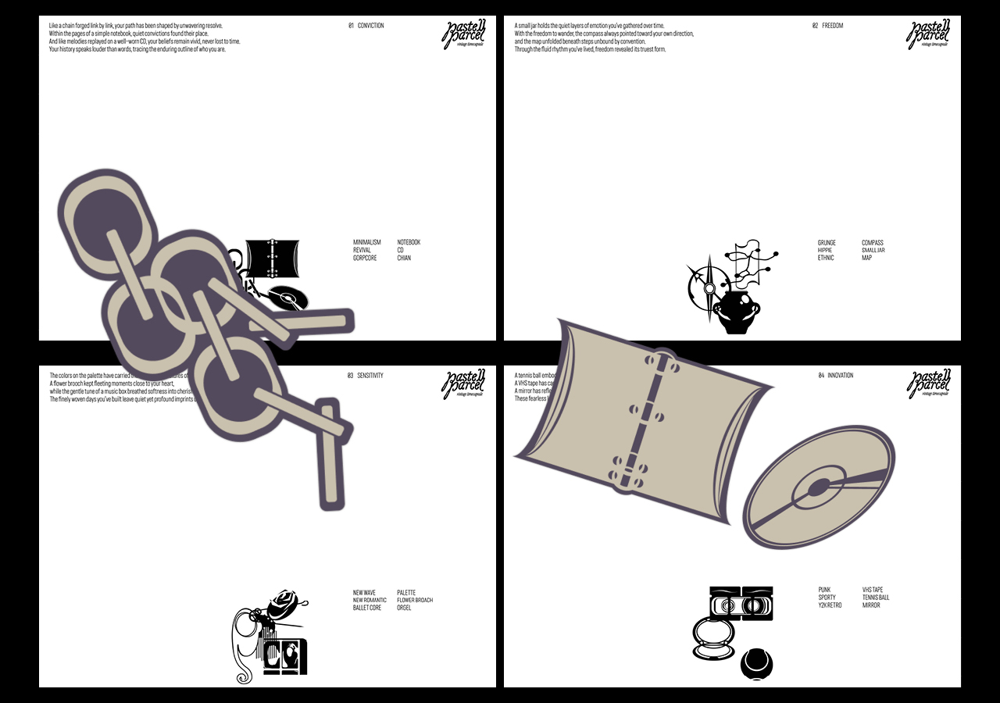
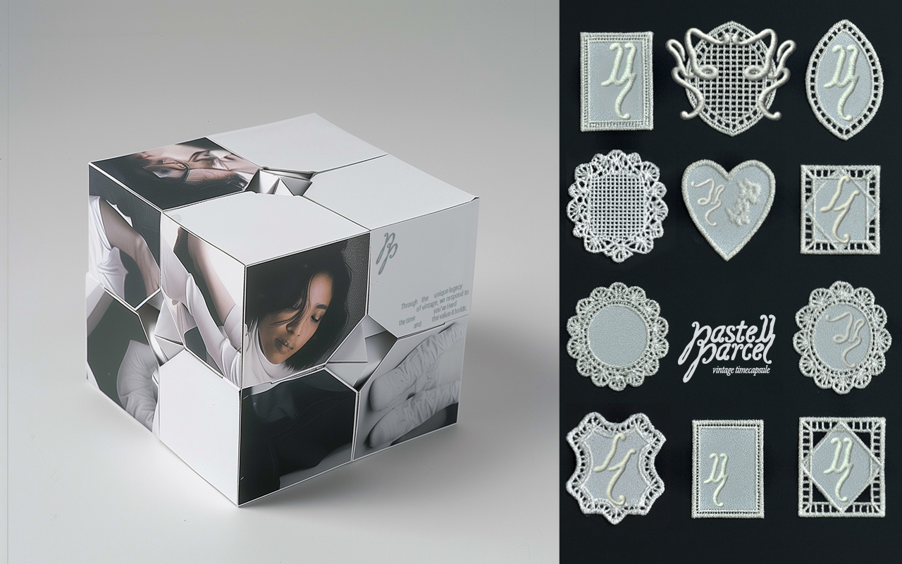
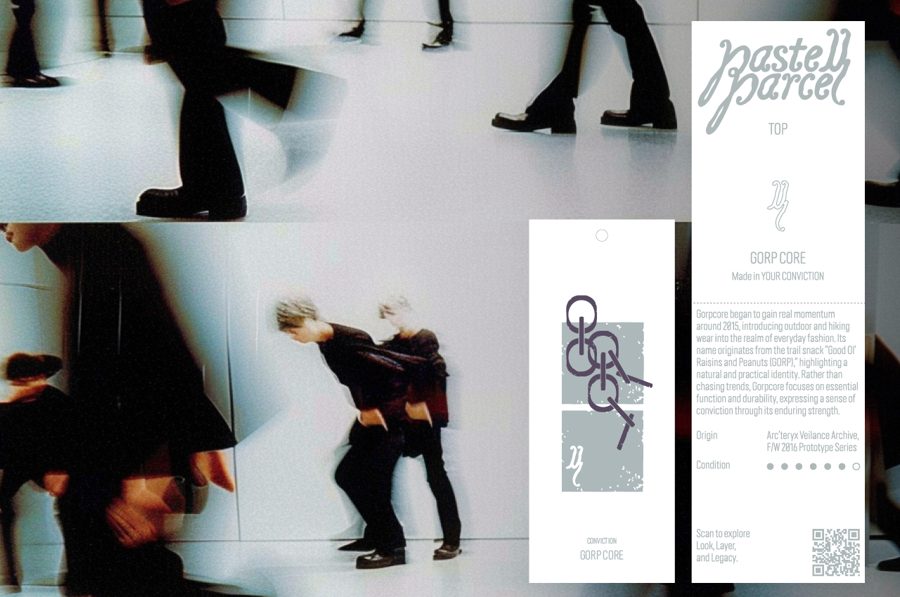
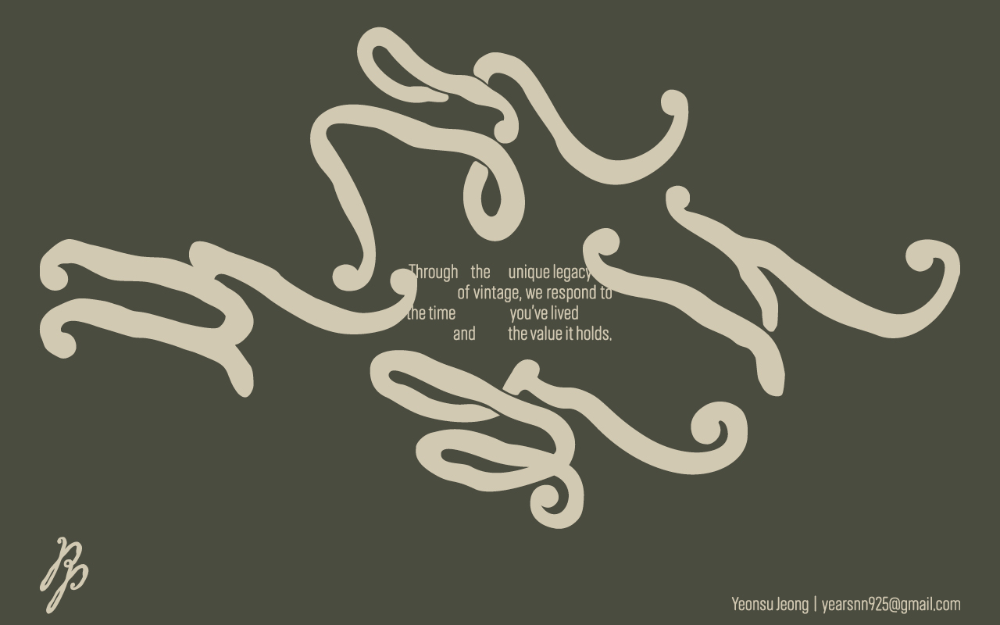

Pastell Parcel
정연수
Pastell Parcel은 시대 스타일 정신과 개인의 삶을 연결해, 빈티지를 과거의 기록이자 현재에 건네는 선물로 재해석합니다.‘중고’와 ‘거래’의 개념으로 국한된 빈티지 시장에서, pp는 빈티지 의류 본연의 가치를 되살리고 새로운 방식의 공유와 경험을 제안합니다.
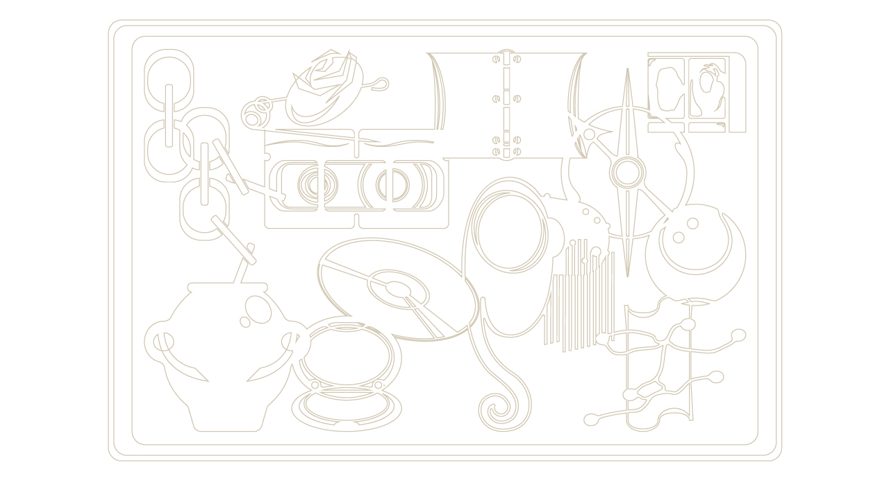
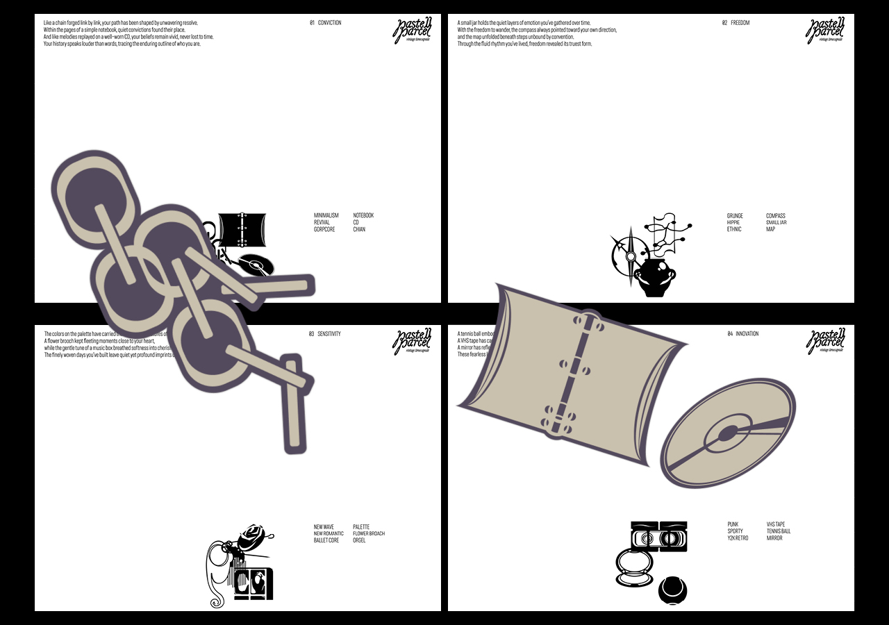
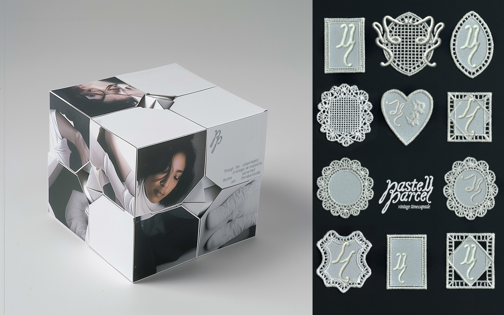
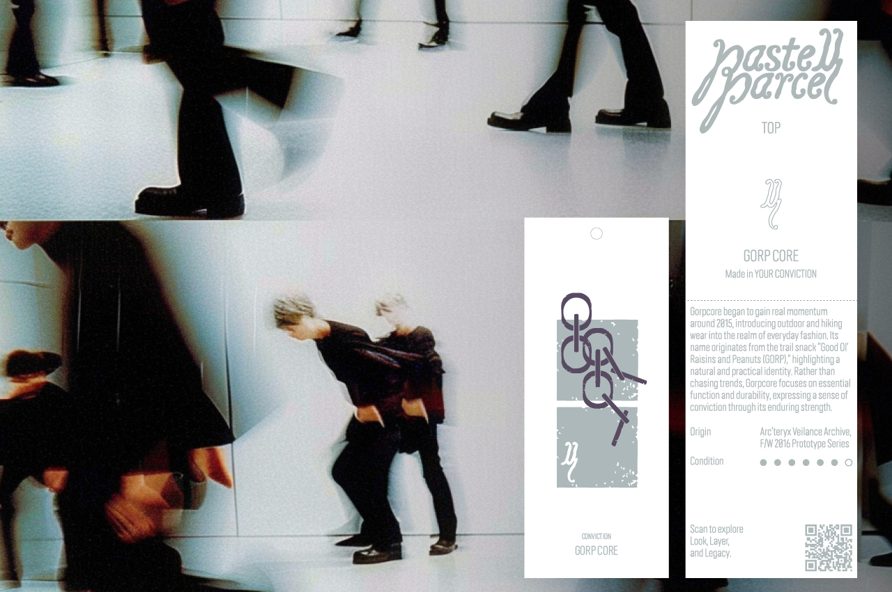
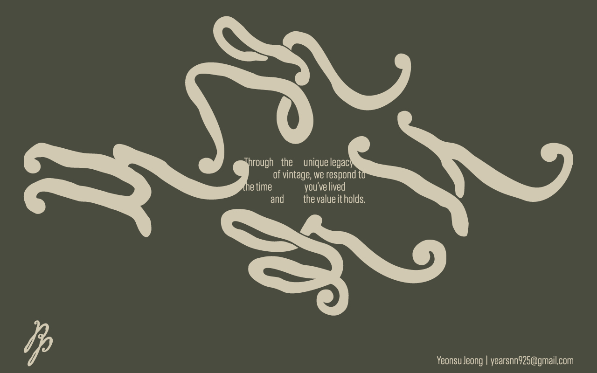
2025ⓒSeoul National University of Science and Technology.All Rights Reserved.